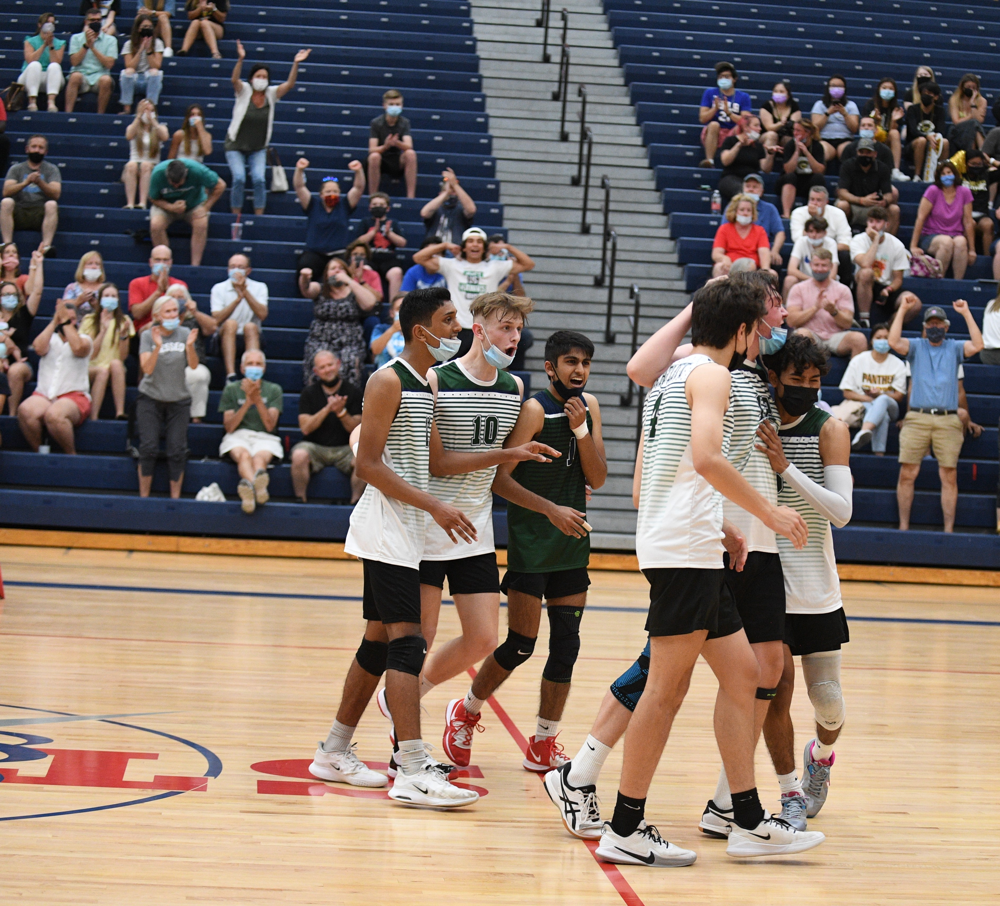
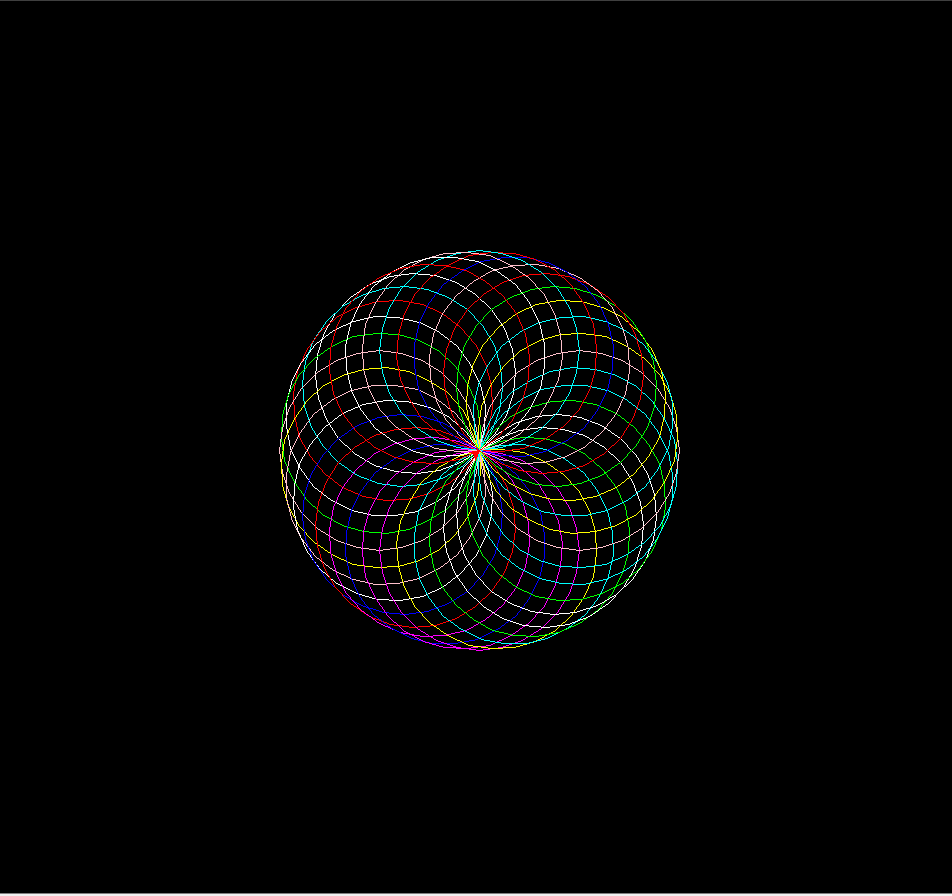

My name is Jake Smith and I am the creator of this program. The purpose of this is for my final project in one of my Information Technology classes at the University of Missouri. I am currently learning Python, JavaScript, and HTML and play volleyball at the University.
Here is a photo of me and my highschool teammates celebrating our regional semifinal win:
Here is a table showing what Information Technology classes I am taking in the Fall 2022 semester:
| Class Number | Class Name | Instructor |
|---|---|---|
| INFOTC 1600 | Digital Systems | D. Musser |
| INFOTC 1610 | Intro to Digital Media Design | C. Gubera |
| INFOTC 2040 | Programming Languages and Paradigms | K. Culmer |
| INFOTC 2810 | Fundamentals of Network Technology | F. Wang |
In my INFOTC 1040 class, one of my favorite projects was using Python Turtle Graphics to make something interesting. Here is how I coded it and what the outcome looks like:
import random
import turtle
from turtle import Turtle
turtle.bgcolor("black")
class CoolTurtle(Turtle):
def awesome_spiro(self, num_circle):
colors = ["red","yellow","blue","white","cyan","pink","lime","magenta"]
for i in range(num_circle):
color = random.choice(colors)
self.color(color)
self.circle(100)
self.left(10)
epic_turtle = CoolTurtle()
epic_turtle.awesome_spiro(40)
input() # so the image stays

To go learn about a position, select one below:
Or, go back to the home page.